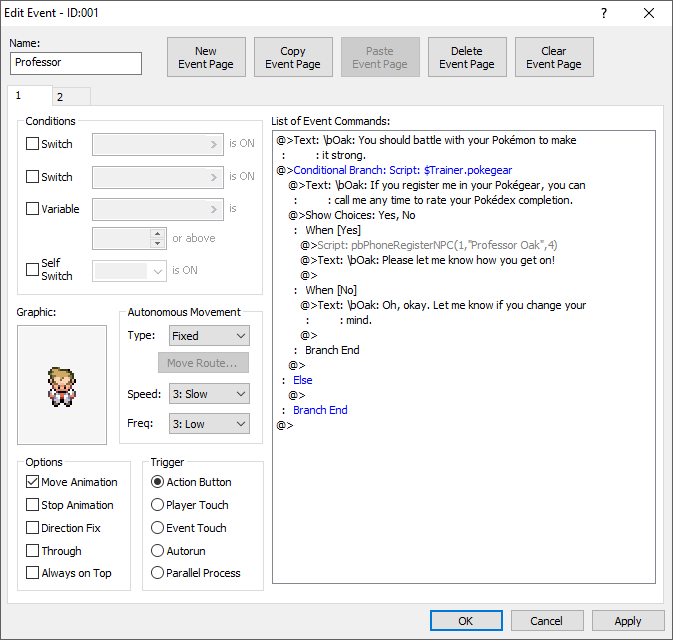

Eventos
Pokémon Essentials BES es una base para desarrollar juegos emulando las mecánicas de Pokémon, pero ésta funciona gracias a un programa llamado RPG Maker XP y entender el funcionamiento de este motor de juego es igual de importante.
RPG Maker XP, al margen de los scripts, está diseñado para trabajar con las funciones propias del programa, sin necesidad de aprender a programar.
Y el punto más importante son los eventos, los cuáles se detallan en esta página.
Interfaz principal

Al crear un evento en una casilla del mapa (sólo puede haber uno por casilla), en su correspondiente capa, lo primero que aparecerá será esta interfaz. Dependiendo de la versión de RPG Maker XP que se utilice, sea en español o inglés, variarán los nombres y en algunos casos, la posición de los elementos dentro de la misma.
- ID y nombre del evento: a todos los eventos se les asocia un ID al momento de crearlo, lo que permite identificarlos incluso tras cambiarles los nombres, que son recomendables de utilizar pues agiliza encontrarlos y saber qué evento es.
- Páginas del evento: todos los eventos, al crearse, se componen de una única página. Sin embargo, para eventos más complejos, se requerirá de dos o más páginas. Se utilizan para cambiar el estado del evento actual o, incluso, utilizadas de la forma correcta, permitiría tener dos o más eventos distintos en la misma casilla del mapa. Las páginas se crean en orden de izquierda a derecha, pero cuando el evento se inicie, siempre ejecutará las acciones de la página más a la derecha, salvo que ésta se encuentre bloqueada por una condición. Si ese fuera el caso, ejecutará la anterior, pero si esa tampoco cumple las condiciones, seguirá hasta que llegue a una página que en ese momento sí cumpla los requisitos para su ejecución.
- Condiciones de aparición: los eventos (y sus diferentes páginas) pueden ejecutarse de manera inmediata (según su detonante, explicados más abajo) o pueden programarse para que sólo actúen si se cumple una condición. Existes tres tipos. Para saber más en profundidad acerca de ellos, consulta la página Interruptores y Variables.
- Interruptores (Switch): tal como los interruptores de luz, tienen dos estados, encendido o apagado. Cuando está encendido, es porque se cumple una condición, y viceversa. Por ejemplo, para que un personaje diga un diálogo diferente después de realizar una acción concreta (como, por ejemplo, vencer a un líder de gimnasio), se necesita crear un interruptor. El programa guarda una lista de interruptores que se puede modificar y utilizarse a lo largo de todo el juego.
- Interruptores locales (Self Switch): son lo mismo que los interruptores, pero sólo afectan al mismo evento donde se activan y existe un límite de 4 (A, B, C, D). Sirven para casos sencillos que sólo afecten al propio evento; por ejemplo, si un personaje entrega un objeto, cuando se vuelva a hablar con él, ya no lo dará. Eso es porque se ha activado un interruptor, en este caso, local, que ha cambiado la página actual donde se ejecuta el evento.
- Variables: una variable es simplemente un elemento asociado a un número y si éste tiene un valor concreto o se encuentra dentro de un rango, hará (o no) que ocurra algo. Un ejemplo sería que se necesite X cantidad de dinero para poder comprar algo y si no se tiene, no puede realizar esa acción. Al igual que con los interruptores, también se guardan en una lista que puede modificarse y usarse dentro de todo el juego.
- Movimiento autónomo: el evento, por sí sólo, puede moverse por el mapa donde se esté, en función a tres aspectos.
- Tipo de movimiento: existen cuatro tipos.
- Inmóvil (Fixed): quieto.
- Aleatorio (Random): se puede mover en todas las direcciones posibles, aleatoriamente.
- Seguir (Approach): se mueve de manera que trata de acercarse al jugador.
- Ruta (Custom): se mueve siguiendo una ruta predeterminada, la cual se programa en la opción “Crear Ruta (Move Route)”, que viene a ser exactamente igual que el comando de evento del mismo nombre (los comandos de evento se explican en otra sección, más abajo).
- Velocidad: existen seis niveles de velocidad, siendo el 1 el más lento y el 6 el más rápido.
- Frecuencia: es la frecuencia con la que se mueve el evento (tanto en movimiento como parado), habiendo seis niveles, siendo el 1 el que hará que tarde más en moverse y el 6 en el que constantemente esté moviéndose. Un ejemplo: un Pokémon volador, al batir las alas, si tuviera una frecuencia de nivel 1, quedaría muy raro, pues se mantendría en el aire sin moverse la mayor parte del tiempo.
- Opciones: relacionado al movimiento autónomo del evento, hay factores que influyen en cómo se moverá por el mapa y cómo interactuará con éste y otros eventos.
- Animación al moverse (Move Animation): lo normal es que el gráfico del evento cambie al moverse, creando una animación.
- Animación parado (Stop Animation): un Pokémon volador, sin moverse de su posición, estaría batiendo sus alas; en cambio, una persona, se mantendría quieta en su sitio.
- Dirección fija (Direction Fix): cuando un evento se mueve, lo normal es que, si se mueve a la derecha, su gráfico cambie a estar mirando en esa dirección, y así con todas. Pero pueden darse casos donde se quiera que un evento siempre se mantenga mirando en una dirección, independientemente de hacia donde se mueva. Esto sirve también para, por ejemplo, en los gráficos de los personajes u otros elementos animados, añadir diversas poses y evitar que al moverse muestre las que no debería.
- Atravesable (Through): activando esta opción, el evento podrá pasar por encima a otros eventos y elementos del mapa, independientemente si estos originalmente podían atravesarse o no.
- Sobre el personaje (Always on Top): es similar a la anterior, pero únicamente pasará por encima de los gráficos que, desde el principio, podían atravesarse. Un ejemplo: cuando el jugador pasa por detrás de un árbol, es ocultado parcialmente por el gráfico de la copa del árbol; con esta opción activada, esa parte oculta ahora se vería por encima. Sin embargo, si intentara pasar a través del gráfico de la parte baja del árbol, no podría, pues éste se configura generalmente para que bloquee el paso en todas las direcciones; tampoco puede pasar por encima de otros eventos. Debido a esto, para usarse correctamente, debe hacerse conjuntamente junto con la opción Atravesable (Through).
- Detonante de inicio (Trigger): es el método por el cual un evento puede activarse, en conjunto con las condiciones del evento.
- Pulsar Aceptar (Action Button): al interactuar directamente, pulsando un botón.
- Toparse con héroe (Player Touch): cuando el jugador toca al evento.
- Colisionar (Event Touch): cuando el evento toca al jugador. La diferencia con el anterior radica en que, aquí, si el jugador estuviese quieto, el evento se activaría; si tuviese la otra, no. Un ejemplo sería un evento que persiguiese al jugador y que, al éste tocarle, iniciara un combate.
- Inicio automático (Autorun): nada más entrar a un mapa, el evento se ejecutará, impidiendo realizar cualquier acción fuera de lo programado en el evento, hasta que éste termine.
- Proceso paralelo (Parallel Process): se ejecuta nada más entrar al mapa, pero a diferencia del inicio automático, lo hará de forma paralela mientras el jugador u otros eventos realizan acciones. Sin embargo, no todos los comandos de evento permiten ejecutarse en paralelo; por ejemplo, los diálogos detendrán todo lo demás mientras estén en pantalla, salvo que se utilicen scripts específicos, externos al programa y a la propia base de Pokémon Essentials BES.
- Gráfico: es el gráfico del evento, que debe encontrarse en la carpeta Graphics/Characters.
- Contenidos del evento (List of Events Commands): este es el núcleo del evento, donde se programan las acciones que realiza y se añaden mediante comandos de evento.
Comandos de evento
Dentro de RPG Maker XP existen varios comandos por defecto, que realizan acciones concretas dentro de los eventos. Estos se reparten en tres páginas.
En Pokémon Essentials BES algunos de estos comandos están modificados o no tienen uso.
Página 1
| Nombre del comando | Descripción |
|---|---|
| Mostrar mensaje (Show Text) | Muestra textos en pantalla. Para saber más sobre cómo sacar el máximo potencial a este comando, consulta la página de Mostrar mensaje. |
| Mostrar elecciones (Show Choices) | Muestra hasta un máximo de 4 opciones y permite elegir lo que pasará si se pulsa el botón asignado a Cancelar mientras estén en pantalla (cierra el menú de opciones, elige una de las opciones o se crea una rama que actúa como una quinta opción). Para mostrar más de 4 opciones, puede hacerse a través de comandos de texto dentro del comando de evento Mostrar mensaje. |
| Proceso de entrada numérica (Input Number) | Permite al jugador asignar un valor a una variable, estableciendo previamente el número máximo de dígitos que tendrá. Se usa para, por ejemplo, insertar una contraseña numérica. |
| Opciones de mensaje (Change Text Options) | Cambia la posición de la caja de texto (colocándola en la parte superior, media o inferior de la ventana del juego), estando por defecto en la zona baja. También permite ocultarla, dejando sólo el texto en pantalla. Estos cambios se mantendrán en todos los mensajes del juego hasta que vuelva a modificarse. |
| Asignar teclas (Button Input Processing) | ... |
| Esperar (Wait) | Crea una pausa dentro del evento, cuya duración puede modificarse. El tiempo en se mide en frames, siendo 20 frames equivalentes a 1 segundo. |
| Poner anotación (Comment) | Sirve para dejar anotaciones dentro del evento, a modo de guía. De forma general, estas notas sólo se verán en el editor; pero en Pokémon Essentials BES, algunas se utilizan de forma especial y se convierten en comandos de evento cuando se compila el juego, como, por ejemplo, en un evento de entrenador. |
| Condiciones y efectos (Conditional Branch) | Crea una condición dentro del evento, donde si se cumple una condición concreta, ocurre algo, y viceversa, pudiendo añadir una excepción. Existen varios tipos de condiciones, que se reparten en cuatro páginas, pero no todos tienen uso en Pokémon Essentials BES. Página 1:
Página 3
|
| Comenzar ciclo (Loop) | Crea un bucle dentro del evento, haciendo que se repita constantemente todo lo que esté dentro de este bucle. |
| Romper ciclo (Break Loop) | Interrumpe un bucle, permitiendo que continúe el evento desde ese punto. |
| Parar proceso de evento (Exit Event Processing) | Detiene el procesamiento de los comandos del evento, incluso si hay comandos después de éste. |
| Borrar evento temporalmente (Erase Event) | Borra temporalmente el evento, mientras el jugador permanezca dentro del mapa donde está. Si sale y vuelve a entrar, el evento reaparecerá. |
| Llamar a evento común (Call Common Event) | Llama a un evento común y lo ejecuta. Un evento común es uno que se usará en muchas ocasiones y no tendrá cambios, por lo que en lugar de copiarlo y pegarlo múltiples veces, es mejor crearlo en la pestaña "Eventos comunes" de la Base de Datos. |
| Elegir etiqueta (Label) | Crea una etiqueta y se le asigna un nombre, que se utiliza para dar saltos dentro de la lista de comandos del evento, sin tener que ejecutarlos todos en orden. |
| Ir a etiqueta (Jump to Label) | Salta a la etiqueta designada y ejecuta los comandos de evento que hay debajo de ella. |
| Operaciones de interruptor (Control Switches) | Activa o desactiva un interruptor concreto o un rango de ellos dentro de la lista de interruptores. |
| Operaciones de variable (Control Variables) | Cambia el valor de una variable concreta o un rango de ellas dentro de la lista de variables. Para saber más acerca del uso de las variables, consulta la página Interruptores y Variables. |
| Operaciones de interruptor local (Control Self Switch) | Activa o desactiva un interruptor local. |
| Operaciones de tiempo (Control Timer) | Inicia un temporizador cuya cuenta va bajando, o detiene uno ya existente y lo hace desaparecer. Si el temporizador llega a 0, seguirá en pantalla hasta que este comando lo borre. |
| Cambiar dinero (Change Gold) | Aumenta o reduce la cantidad de dinero del jugador, en una cantidad concreta o en función a una variable. |
| ... | |
| ... | |
| ... | |
| ... | |
| Cambiar skin del sistema (Change Windowskin) | Cambia el gráfico de la caja de texto. |
| Cambiar música de batalla (Change Battle BGM) | Cambia la música que sonará en el siguiente combate, que debe estar guardada en la capeta Audio/BGM. |
| Cambiar música de victoria (Change Battle End ME) | Cambia la música que sonará tras vencer el siguiente combate, que debe estar guardada en la carpeta Audio/ME. |
| Cambiar permisos de guardado (Change Save Access) | Permite o prohíbe al jugador guardar la partida, ocultando la opción en el menú. |
| Cambiar permisos de menú (Change Menu Access) | Permite o prohíbe al jugador abrir el Menú de Pausa. |
| Cambiar permisos de encuentros (Change Encounter) | Permite o prohíbe los encuentros con Pokémon salvajes. |
Página 2
| Nombre del comando | Descripción |
|---|---|
| Teletransportar (Transfer Player) | Mueve al jugador a una ubicación diferente dentro del mismo mapa o de otro. Se puede elegir la posición de forma directa (lo más común y sencillo) o mediante variables (complejo y sólo útil para casos muy específicos). Además, permite elegir en qué dirección estará mirando el jugador cuando llegue a su destino, así como si la transición será directa o habrá un efecto de fundido. |
| Elegir posición de evento (Set Event Location) | Similar al comando anterior, pero sólo para eventos y dentro del mismo mapa, pudiendo además intercambiar la posición de un evento con otro. |
| Scroll de mapa (Scroll Map) | Cambia la parte del mapa en la que se centra la pantalla, que normalmente está enfocada en el jugador, pudiendo elegir la dirección, la distancia y la velocidad. La distancia se mide en casillas del mapa y se empiezan a contar desde el borde de la pantalla opuesto al que se quiere desplazar. Por ejemplo, al hacer el desplazamiento hacia abajo, el número de casillas que se moverá comienza a contarse desde el borde superior, desapareciendo de la visión del jugador esa zona primero. El tamaño de la ventana de juego de Pokémon Essentials BES, por defecto, muestra 15 casillas de ancho x 11 de alto, más la mitad de otra casilla adicional por cada lado. |
| Cambiar gráficos de mapa (Change Map Settings) | Cambia el gráfico de panorama o niebla en el mapa actual, el cual inicialmente está definido en la pestaña Tilesets de la Base de Datos. La opción de cambiar el fondo de batalla desde este comando no funciona en Pokémon Essentials BES. |
| Cambiar tono de niebla (Change Fog Color Tone) | Cambia el color de la niebla y el tiempo de la transición del color original al nuevo (en frames, 20 = 1 segundo). |
| Cambiar opacidad de niebla (Change Fog Opacity) | Cambia la opacidad de la niebla, desde el valor 0 (transparente) al 255 (opaca) y el tiempo de la transición de la opacidad inicial a la nueva (en frames, 20 = 1 segundo). |
| Mostrar animación de mapa (Show Animation) | Reproduce una animación centrada en el jugador o en un evento. |
| Cambiar transparencia (Change Transparent Flag) | Hace visible o invisible al jugador. |
| Mover evento (Set Move Route) | Establece movimientos o acciones para el jugador o un evento, teniendo la opción de repetirlos en bucle o ignorarlos si el evento, por alguna razón, no puede ejecutarlos. La lista de posibles acciones es la siguiente.
|
| Esperar a fin de movimiento (Wait for Move’s Completion) | Se usa después de "Mover evento" para hacer que el evento haga todas las acciones programadas en él, antes de continuar con el siguiente comando del evento. Si no se utiliza, el evento continuará mientras, además, ejecuta las órdenes del comando "Mover evento", lo que puede dar errores si no se planifica para que ocurra de esa manera. |
| ... | |
| ... | |
| Cambiar tono de pantalla (Change Screen Color Tone) | Cambia el tono de la pantalla, hasta que el jugador se mueva a un mapa diferente, así como el tiempo de la transición del color original al nuevo (en frames, 20 = 1 segundo). |
| Flash de pantalla (Screen Flash) | Similar al anterior, pero de forma temporal, utilizándose sobre todo para mostrar destellos en pantalla. |
| Sacudir pantalla (Screen Shake) | Sacude la pantalla, pudiendo elegir la intensidad, la velocidad y el tiempo de duración (en frames, 20 = 1 segundo) |
| Mostrar imagen (Show Picture) | Muestra una imagen en pantalla, que debe estar en la carpeta Graphics/Pictures. Puede haber varias a la vez y a cada una se le debe asignar un número distinto, pues si tienen el mismo, la última imagen en mostrarse sustituirá a la anterior con el mismo valor. Además, hay varios parámetros que pueden modificarse.
|
| Mover imagen (Move Picture) | Mueve o modifica una imagen que ya esté en pantalla, con casi las mismas opciones que el comando anterior. El desplazamiento se realiza desde la posición inicial hasta la final dentro de un periodo de tiempo determinado (en frames, 20 = 1 segundo). La coordenada en el eje X mueve la imagen lateralmente a la derecha (valor positivo) o a la izquierda (valor negativo); la Y lo hará verticalmente hacia abajo (valor positivo) y hacia arriba (valor negativo). |
| Rotar imagen (Rotate Picture) | Hace que una imagen mostrada comience a rotar a una velocidad concreta en dirección antihoraria (si el valor es positivo) u horaria (si el valor es negativo), en relación a su punto de origen (su esquina superior izquierda o el propio centro de la imagen). |
| Cambiar tono de imagen (Change Picture Color Tone) | Cambia los colores de una imagen mostrada y el tiempo de la transición del color original al nuevo (en frames, 20 = 1 segundo). |
| Borrar imagen (Erase Picture) | Borra una imagen que se esté mostrando en pantalla. |
| Opciones de clima (Set Weather Effects) | Crea un determinado clima. Este comando solo muestra lluvia, tormenta o nevada; para otros climas, es necesario modificar un script. |
| Reproducir música (Play BGM) | Reproduce una melodía ubicada de la carpeta Audio/BGM, donde se deben guardar todas las melodías largas. No pueden estar sonando a la vez dos BGM. |
| Decrecer música (Fade Out BGM) | Decrece la melodía que está sonando hasta detenerla, pudiendo elegir el tiempo que tarda en hacerlo. |
| Reproducir sonido (Play BGS) | Reproduce un sonido de fondo de la carpeta Audio/BGS, donde se deben guardar estos sonidos. No pueden estar sonando a la vez dos BGS. |
| Decrecer sonido (Fade Out BGS) | Decrece el sonido de fondo que está escuchándose hasta detenerse, pudiendo elegir el tiempo que tarda en hacerlo. |
| Memorizar música/sonido (Memorize BGM/BGS) | Memoriza la melodía y el sonido de fondo que se está reproduciendo actualmente. |
| Reproducir memorizados (Restore BGM/BGS) | Reproduce la melodía y el sonido de fondo memorizado con el comando anterior. |
| Reproducir efecto musical (Play ME) | Reproduce una pieza musical de la carpeta Audio/ME, donde se deben guardar este tipo de composiciones. Estos archivos son melodías cortas que, a diferencia de los BGM o los BGS, el programa no los repetirá en bucle una vez termine la melodía. |
| Reproducir efecto sonoro (Play SE) | Reproduce un efecto de sonido de la carpeta Audio/SE, donde se deben guardar estos audios. Al igual que los ME, son cortos y no se repetirán en bucle una vez terminen. |
| Parar efecto sonoro (Stop SE) | Detiene el efecto de sonido mientras aún está sonando. |
Página 3
| Nombre del comando | Descripción |
|---|---|
| ... | |
| ... | |
| ... | |
| ... | |
| ... | |
| ... | |
| Curar todo (Recover All) | Restaura completamente la salud de todo el equipo Pokémon del jugador. |
| ... | |
| ... | |
| ... | |
| ... | |
| ... | |
| ... | |
| ... | |
| ... | |
| ... | |
| ... | |
| ... | |
| ... | |
| ... | |
| ... | |
| ... | |
| ... | |
| ... | |
| ... | |
| Llamar a menú (Call Menu Screen) | Abre el Menú de Pausa. |
| Llamar a menú Guardar (Call Save Screen) | Pide al jugador guardar la partida. |
| Fin del juego (Game Over) | Lleva a la pantalla donde un jugador acaba tras perder un combate, mostrando un mensaje. |
| Volver a pantalla de título (Return to Title Screen) | Envía al jugador a la pantalla inicial, donde se encuentran las opciones de Continuar, Partida Nueva, Opciones y Salir del Juego. |
| Llamar a script (Script) | Llama a un script que esté configurado dentro del código del juego, accesible a través del Editor de Script. |